7 Session 7: Linear Models, Gradient Descent, the XOR Problem & Secondary Structure Prediction
Sources for this page: d2l.ai, Dive into Deep Learning, Linear Neural Networks for Regression — CC BY-SA 4.0; Wikipedia, Perceptron, Perceptrons (book), Gradient descent, Linear separability, AI winter, Backpropagation, Protein secondary structure, Alpha helix, Beta sheet, and Protein structure prediction — CC BY-SA 4.0; Bulyk, Johnson & Church (2002), Nucleic Acids Research 30(5):1255-1261, PubMed; Chou & Fasman (1974), Biochemistry 13(2):222-245, PubMed; Garnier, Osguthorpe & Robson (1978), Journal of Molecular Biology 120(1):97-120, PubMed; Rost & Sander (1993), “Prediction of protein secondary structure at better than 70% accuracy,” Journal of Molecular Biology 232:584-599. The brain/perceptron figure is Rosenblatt, F., “The Design of an Intelligent Automaton,” Research Reviews, Office of Naval Research, October 1958, pp. 5-13 — public domain (US federal government work), via Wikimedia Commons. The real secondary-structure counts for HBB below were fetched live from EBI’s PDBe API — CC BY 4.0 — see the notebook. The by-hand AND/OR/NAND perceptron weights, the closed-form vs. iterative linear-regression comparison, and the “solve XOR by engineering a feature” example below are mined for ideas from Magnus Ekman’s Learning Deep Learning (slide decks Chapter-1, Chapter-2, Appendix-A in slides/) — a copyrighted, not openly-licensed textbook (the very one this course rebuild is replacing), credited here as an internal source the way Petras Kundrotas’s own lecture decks are on other days, not linked as further reading. Every number below was independently recomputed and verified in code, not transcribed. Text below is written from scratch, not copied, following these ideas.

Notebook: Session 7 — Linear models, gradient descent, and the XOR problem — the code behind this page. Download it to run it yourself.
Session 6 gave us structural properties that we would like to predict from sequence, with secondary structure first among them. This session starts building the mathematical machinery for doing that.
7.1 Learning goals
By the end of this session you should be able to:
- explain that a profile score and a perceptron share the same mathematical core, a weighted sum (dot product), and how they differ;
- explain how a model’s weights can be learned from labelled examples by gradient descent, rather than derived from alignment statistics;
- explain, with a real biological example, why some patterns cannot be captured by any linear model, and why a hidden layer only helps if its activation function is nonlinear;
- describe how Rost & Sander’s PHD method (1993) combined profile input from multiple alignments with a neural network to predict secondary structure better than earlier methods;
- explain why a more powerful model cannot compensate for an input representation that lacks the relevant information.
7.2 Two pictures to keep in mind
This session uses many names: profile score (PSSM), perceptron, linear and logistic regression, sigmoid, tanh, hidden layer, multilayer perceptron and PHD. Behind them there are only two pictures, and together these two pictures explain the whole idea of the lecture.
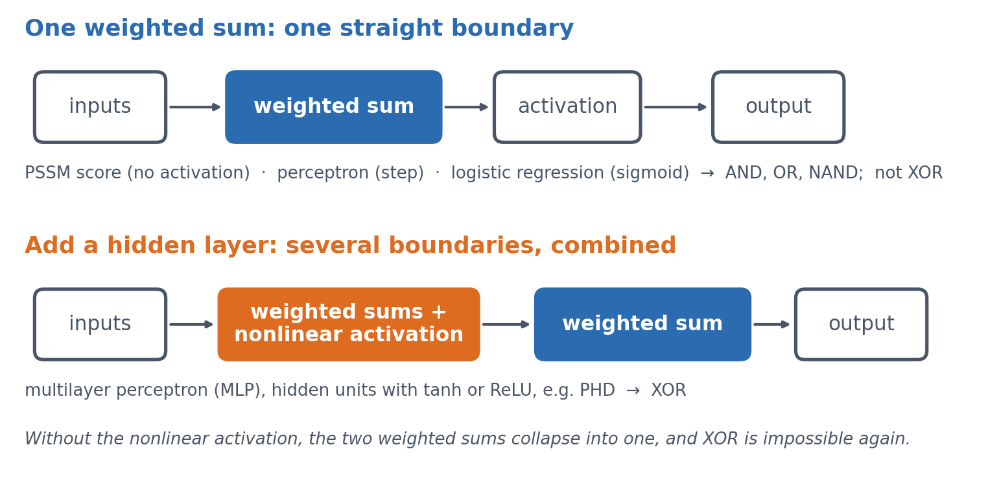
Keep them in mind as you read. The goal of the session is to understand what changes between the two pictures, and why that change makes XOR possible.
7.3 A profile score and a perceptron: the same weighted sum
You actually already know the central computation of a neural network. Session 5 introduced the profile score, which checks how well a sequence matches a known family. It multiplies each position’s observed value by a position-specific weight and adds up the results. In Session 1’s terms, this is a dot product, something you learned on the first day. A perceptron has exactly the same mathematical core, because it also computes a weighted sum \(z\):
\[ z = w_1 x_1 + w_2 x_2 + \dots + w_n x_n + b \]
The extra term \(b\), a bias, shifts the whole sum by a constant amount, so that the model’s decision threshold can sit somewhere other than zero. The PSSM and the perceptron share this weighted sum, but they differ in what they do with it. A PSSM reports the sum itself as a score. A perceptron instead passes the sum through an activation function, originally a threshold (output 1 if \(z > 0\), else 0), to make a classification. Keeping the two terms apart helps later on. “Profile score” means a linear score, and “perceptron” means a (thresholded) classifier that adds an activation function to the same weighted sum.
Where the name comes from. Frank Rosenblatt introduced the perceptron in 1958, first as a simulation on an IBM 704 computer, and the Mark I Perceptron machine followed in 1960. He modelled it on a simplified neuron. Each synapse weights its input, the cell sums the weighted inputs, and the cell fires once the sum crosses a threshold. The weights \(w_i\) therefore stand for connection strengths, and \(b\) for how easily the cell fires. His own diagram set the circuit of the brain next to the perceptron built to mirror it:
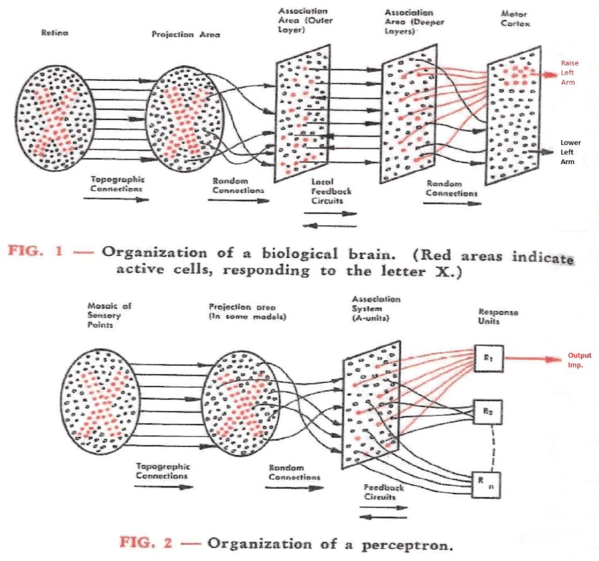
Geometrically, \(z = 0\) is a line in two dimensions (a plane, or hyperplane, in higher dimensions), and this line is the model’s decision boundary. On one side of it the output is 1, and on the other side it is 0.
Solving \(w_1 x_1 + w_2 x_2 + b = 0\) for \(x_2\) gives \(x_2 = -\frac{w_1}{w_2} x_1 - \frac{b}{w_2}\). This is the familiar \(y = mx + c\) form of a line, with the bias \(b\) playing the role of the intercept \(c\) (scaled by \(-1/w_2\)). Changing \(b\) therefore slides the whole line sideways without changing its slope. The intercept \(b_0\) plays the same role in ordinary linear regression, as the next section shows.
7.3.1 Further reading
- Wikipedia, Perceptron — other activation functions and the original biological motivation, beyond the general-purpose version above
7.3.2 Further watching
But what is a neural network? (3Blue1Brown, Deep Learning ch. 1), animating what a weighted sum + activation is doing:
7.4 Learning the weights from examples
So far the weights have simply been given. A profile’s weights come from counting: we look at a multiple alignment, count how often each residue appears at each position, and turn those counts into log-odds scores. This works well when we already have a trustworthy alignment to count from. As Session 5 showed, small alignments need some extra tricks (pseudocounts), but that is still counting, only with some modifications.
The alternative to counting, and the one the rest of this course builds on, is to learn the weights directly from labelled examples with an optimisation method, normally gradient descent as described in Session 1. We often start with arbitrary (random) weights and measure how wrong the model’s current predictions are with a loss function. We then compute the gradient of that loss with respect to each weight, and nudge every weight a small step in the direction that reduces the loss. This is repeated many times. No alignment and no hand-counting are needed, only examples and many small corrections. This is the foundation of all machine learning: we do not tell the computer what to do, but let it learn what to do.
In this session’s lab, the code works directly with raw tensors and automatic differentiation (Session 2). It deliberately avoids the higher-level nn.Module and training-loop tools that Session 8 introduces, because the point here is to see every step of the mechanics rather than to use a convenient shortcut around them.
Worked example. Take a perceptron with one input and no bias yet (\(z = wx\)), an initial weight \(w_0 = 0\), a training example \((x, y) = (2, 6)\), a squared-error loss \(L(w) = (wx - y)^2\), and a learning rate \(\eta = 0.05\). Session 1’s chain rule gives
\[ \frac{dL}{dw} = 2(wx - y) \cdot x \]
The table shows the first iterations of gradient descent, \(w_{n+1} = w_n - \eta \, dL/dw\):
| \(n\) | \(w_n\) | prediction \(w_n x\) | \(dL/dw\) | \(w_{n+1} = w_n - 0.05 \, dL/dw\) |
|---|---|---|---|---|
| 0 | 0.00 | 0.00 | \(2(0-6)(2) = -24.0\) | 0.00 − 0.05 × (−24.0) = 1.20 |
| 1 | 1.20 | 2.40 | \(2(2.4-6)(2) = -14.4\) | 1.20 − 0.05 × (−14.4) = 1.92 |
| 2 | 1.92 | 3.84 | \(2(3.84-6)(2) = -8.64\) | 1.92 − 0.05 × (−8.64) = 2.35 |
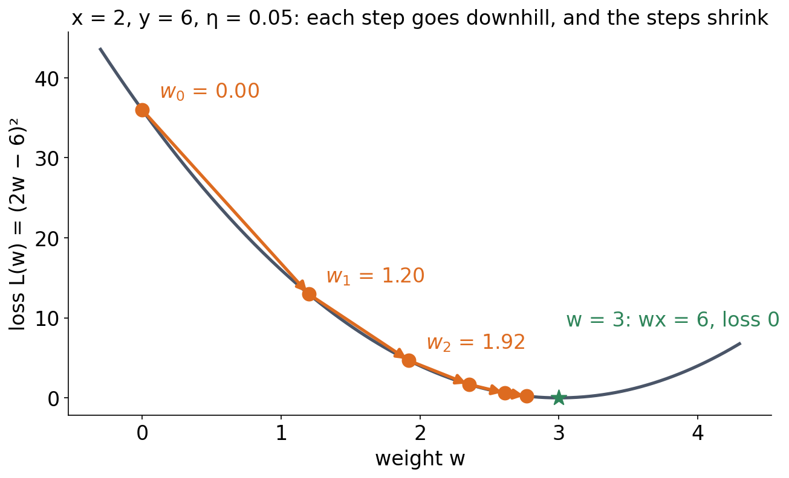
The weight converges towards \(w = 3\) (Figure 7.3), where the prediction \(wx = 3 \times 2 = 6\) would exactly match the target. Just as in Session 1’s one-variable example, the size of each correction (\(dL/dw\)) shrinks by itself as the prediction gets closer, so \(\eta\) needs no manual adjustment. This holds only as long as the learning rate is not too large. With an excessive learning rate, gradient descent overshoots the minimum and can oscillate or diverge (Session 1’s second discussion problem).
Deriving vs. learning, on the simplest possible model. Ordinary linear regression, which fits a line \(\hat y = b_0 + b_1 x\) to data, has a direct numerical solution. It therefore makes a useful check, because gradient descent should reach the same optimum iteratively. Take five noisy points roughly following \(y \approx 2x\), with \(x = (1,2,3,4,5)\) and \(y = (2.1, 3.9, 6.2, 7.8, 10.1)\). A least-squares solver gives \(b_0 = 0.05\) and \(b_1 = 1.99\) in one step, and gradient descent (learning rate \(\eta = 0.01\), thousands of small steps) converges to the same \(b_0 = 0.050\) and \(b_1 = 1.990\).
This mirrors the contrast between Session 5’s PSSM, whose weights are derived directly from alignment counts, and this session’s gradient descent, whose weights are learned iteratively. Gradient descent is what the rest of the course uses, because most models, including a perceptron with its classification loss, have no direct solution.
The least-squares solution can be written with the normal equations. We stack the inputs into a matrix \(X\), with a column of 1s for \(b_0\) next to the \(x\) values. Then
\[ \hat{\beta} = (X^\top X)^{-1} X^\top \mathbf{y} \]
This formula is a way to write the solution, not a way to compute it, because numerical libraries (np.linalg.lstsq, scikit-learn) use more stable methods than inverting \(X^\top X\). Moreover, when the columns of \(X\) are exactly linearly dependent, \(X^\top X\) cannot be inverted at all. This session’s lab comes close to that case. The 20 amino-acid fractions of a protein sum to 1 (for 54 of its 55 proteins, since one contains unknown residues), so together with the intercept column they are almost exactly linearly dependent. A least-squares solver still finds a best fit, but the individual weights are poorly determined.
7.4.1 Further reading
- Wikipedia, Gradient descent — variants (stochastic gradient descent, momentum, Adam) are introduced in Session 9, where we train real networks
7.4.2 Further watching
Gradient descent, how neural networks learn (3Blue1Brown, Deep Learning ch. 2):
7.5 What one weighted sum can represent
Before asking what a perceptron cannot do, it helps to see what it can do.
A perceptron first computes a weighted sum of its inputs, \(z = w_1 x_1 + w_2 x_2 + b\), which is any real number. To turn that number into a decision, it passes \(z\) through an activation function. The simplest one is the step function:
\[ \text{step}(z) = \begin{cases} 1 & \text{if } z > 0 \\ 0 & \text{otherwise} \end{cases} \]
The step function answers yes or no, and nothing in between. The weighted sum says how strongly the evidence points one way, and the step throws that strength away and keeps only the sign. This is why a perceptron draws a straight boundary: \(z > 0\) on one side, \(z \le 0\) on the other, and the line \(z = 0\) between them. We use the step function here because it makes the logic gates below exact and easy to check by hand. It has one fatal flaw, which Session 8 returns to: its slope is zero everywhere it is defined, so gradient descent gets no signal from it and cannot train a network through it. Every activation used later in the course — sigmoid, tanh, ReLU — is a smoothed version of this same idea.
With a step activation, a single perceptron can implement basic logic gates directly. No training is required, only weights chosen by hand:
| Gate | \(w_1\) | \(w_2\) | \(b\) |
|---|---|---|---|
| AND | 1 | 1 | −1.5 |
| OR | 1 | 1 | −0.5 |
| NAND | −1 | −1 | 1.5 |
Take AND as an example. At \((1,1)\), \(z = 1+1-1.5 = 0.5 > 0 \to 1\), and at every other corner \(z \le -0.5 \to 0\), which is exactly the truth table of AND. (NAND is AND with both weights and the bias negated, which flips every output.) In the notebook, all three gates check out exactly against their truth tables.
Each gate is one straight decision boundary through the square of four inputs, with the “1” corners on one side and the “0” corners on the other. For AND, only \((1,1)\) lies on the positive side of the line \(x_1 + x_2 = 1.5\). The second discussion problem asks you to find weights for OR yourself.
This is easiest to see if we draw the four inputs as dots on a plane and the decision boundary \(z = 0\) as a line between them. The step activation then simply asks on which side of the line a dot lies:
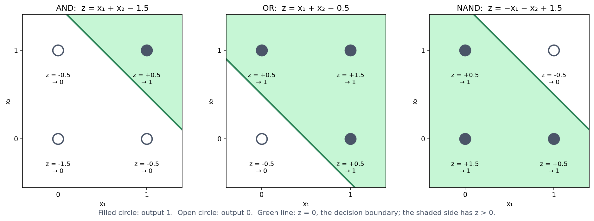
7.6 What one weighted sum can never represent: XOR
A model built purely from weighted sums has a real limitation, because there is a whole class of patterns it can never represent, however its weights are chosen. The classic illustration is the XOR problem. XOR is a function of two binary inputs that outputs 1 when its inputs differ and 0 when they are the same.
| \(x_1\) | \(x_2\) | XOR |
|---|---|---|
| 0 | 0 | 0 |
| 0 | 1 | 1 |
| 1 | 0 | 1 |
| 1 | 1 | 0 |
Before reading on, try it: find weights \(w_1, w_2, b\) that reproduce this table with one perceptron. You will not succeed. The two “1” outputs sit on opposite corners of the input square, and no straight line can put both of them on one side while leaving both “0” outputs on the other. Section 4 of the notebook tries 226,981 combinations of \(w_1\), \(w_2\) and \(b\) (every value from −3 to 3 in steps of 0.1). About 5,000 of them reproduce AND, 9,500 OR and 4,500 NAND, but not one reproduces XOR.

The geometric argument can be turned into a short proof. A perceptron with a sign-style activation outputs 1 when \(z = w_1 x_1 + w_2 x_2 + b > 0\) and 0 otherwise. Reproducing the XOR table therefore requires all four of the following inequalities:
\[ b \le 0, \qquad w_1 + b > 0, \qquad w_2 + b > 0, \qquad w_1 + w_2 + b \le 0 \]
The first and last inequalities come from the two “0” rows, and the middle two from the “1” rows. Adding the second and third inequalities gives \(w_1 + w_2 + 2b > 0\), that is, \(w_1 + w_2 + b > -b \ge 0\) (using \(b \le 0\) from the first inequality). The fourth inequality, however, says directly that \(w_1 + w_2 + b \le 0\). No values of \(w_1\), \(w_2\) and \(b\) can satisfy both at once, so no such weights exist. This is the same fact that the geometric picture showed, derived without drawing anything.
7.6.1 Further reading
- Wikipedia, Linear separability — generalises the geometric argument above beyond the two-input case shown here
7.8 Biological analogues
7.8.1 Interactions between positions: Bulyk et al.
XOR is not just a toy puzzle about logic gates, because the same structure shows up in real sequence motifs. Bulyk, Johnson & Church (2002) used protein-binding microarrays to measure how the binding affinity of a zinc-finger transcription factor depended on the nucleotides at different positions of its binding site. They found that the positions do not contribute independently, since the effect of the nucleotide at one position depends on what is at another position. This directly violates the assumption behind a profile score, namely that the contribution of each position can simply be added to the others. They measured the zinc-finger protein Zif268 (mouse Egr1) and mutants of it binding to all 64 possible central triplets of its site, and concluded that neither a consensus sequence nor a position weight matrix describes the protein’s true specificity.
To see why this kind of dependency is an XOR-shaped problem, consider a deliberately simplified, illustrative version. It is not the actual data from the paper, which involve more positions and continuous binding affinities, but it has the same qualitative shape. Suppose a two-position motif binds strongly only when the two positions belong to different purine/pyrimidine classes (one purine, R = A or G, and one pyrimidine, Y = C or T), and weakly when they belong to the same class:
| Position 1 | Position 2 | Binding |
|---|---|---|
| Y | Y | weak |
| Y | R | strong |
| R | Y | strong |
| R | R | weak |
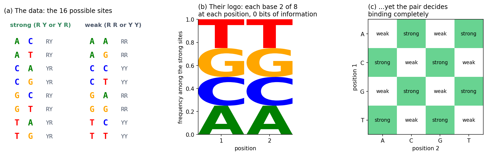
If we relabel “weak” as 0 and “strong” as 1, this is the XOR table above. Neither position predicts binding on its own (Figure 7.7 b), and only their combination does (Figure 7.7 c). This is exactly what no profile score, and no single perceptron, can represent. A hidden layer with a nonlinear activation (Section 7.7), in contrast, can represent such an interaction.
A different fix: change the input. A hidden layer is not the only way to solve XOR. For 0/1-valued \(x_1, x_2\), it happens that
\[ \text{XOR}(x_1, x_2) = x_1 + x_2 - 2\,x_1 x_2 \]
holds exactly (check all four rows: \((0,0) \to 0\), \((0,1) \to 1\), \((1,0) \to 1\), \((1,1) \to 1+1-2 = 0\)). The right-hand side is linear in three inputs: \(x_1\), \(x_2\), and the hand-engineered feature \(x_1 x_2\). Adding this one extra, human-chosen feature therefore turns an unsolvable problem into an exactly solvable linear regression, with weights \((1, 1, -2)\) and bias \(0\). This is a real, older alternative to a hidden layer, and it works. It only works, however, if someone has noticed in advance that \(x_1 x_2\) is the interaction that matters. For Bulyk et al.’s real binding-site data, or for the secondary-structure problem below, nobody knows the useful interaction terms in advance. The advantage of a hidden layer is that it learns useful nonlinear features like this from data, instead of requiring someone to engineer them. The engineered feature also makes a point of its own. Changing the input representation, not the model, turned an impossible problem into an easy one (Section 7.9).
7.8.2 Secondary structure prediction: PHD
Bulyk et al.’s zinc-finger microarrays make the XOR-shaped limitation concrete on a small, hand-built example. Secondary structure prediction, a much larger real problem, illustrates the same general limitation of additive, position-by-position scores. It also shows how better input and a more flexible model moved past that limitation. (XOR itself is not a historical explanation of the plateau described below, but a clean example of the kind of limitation involved.)
What secondary structure is. A protein’s secondary structure is the local, repeating shape into which its backbone folds, short of the full 3D fold (its tertiary structure), as Session 6 showed in PyMOL. Two patterns dominate. The alpha helix is a right-handed coil held together by hydrogen bonds between backbone atoms four residues apart. The beta sheet is made of extended strands lying alongside each other and hydrogen-bonded edge to edge. Everything else is usually called coil (or loop/turn). Predicting secondary structure therefore means labelling every residue in a sequence with one of these three classes. This is a per-residue classification problem rather than a single yes/no like XOR, but it is built from the same kind of position-by-position scoring that this course has used throughout.
Before neural networks. The first methods, Chou & Fasman (1974) and GOR (1978), predate neural networks by decades. Both build each residue’s score mostly by adding up contributions from single residues, and they reached roughly 50-65% three-state accuracy. The optional box below explains how they work and is useful background for the capstone project. The rest of this section explains why adding up residues from a single sequence is not enough.
Session 4 described the sequence motif of signal peptides: a positively charged n-region, a hydrophobic h-region, and small residues at positions −3 and −1 of the cleavage site. The history of predicting them runs through this session’s two pictures (Nielsen, Tsirigos, Brunak & von Heijne 2019, Protein J. 38:200, told by four of the people who made it).
Picture one: a weight matrix. Von Heijne’s 1986 method (Nucleic Acids Res. 14:4683) is a position weight matrix with a log-odds weight for every amino acid at positions −13 to +2 around the cleavage site. It slides along the first 40 residues of a protein, adds up one weight per position, and puts the cleavage site where the sum is highest. The highest sum also served to tell signal peptides from other sequences. This is one weighted sum, the top picture, and like every profile score it treats each position independently.
Picture two: networks with a hidden layer. SignalP 1.0 (Nielsen et al. 1997, Protein Eng. 10:1) replaced the matrix with feed-forward networks on sliding windows, as PHD does for secondary structure (above). One network scores whether each position lies inside a signal peptide (the S-score), a second recognises the cleavage site itself (the C-score), and the two are combined to place the cut. With a hidden layer, a network can learn combinations, for example that a good cleavage site needs a hydrophobic stretch upstream of it. A sum of independent position scores cannot represent such a combination.
The same history also holds a warning. A network can learn combinations that are not real. The first networks for signal peptides were trained on a few dozen sequences, and one of them was built to classify every training protein correctly. It then did poorly on new proteins. Session 8 is about this problem, overfitting.
This is useful background for the capstone project, where you build your own secondary-structure predictor. Chou-Fasman and GOR are simple baselines to compare it with.
The first real attempts predate neural networks by decades. Chou & Fasman (1974) derived empirical propensities for helix, sheet and turn from the (then small) set of known structures. Alanine, glutamate, leucine and methionine, for example, are strong helix-formers, while proline and glycine are helix-breakers. The method combined these propensities with rules. It first finds short nucleation regions of high-propensity residues and then extends them along the chain until breakers stop them. It is therefore a propensity- and rule-based method, not a simple one-residue-at-a-time classifier, and it reached roughly 50-60% three-state accuracy. Garnier, Osguthorpe & Robson (1978), the GOR method, scored each residue with an information-theoretic sum of contributions from a whole window of neighbours. It reached roughly 65% and was better at helices than at sheets. Neither method is literally a perceptron, but both build their score mostly by adding up per-residue contributions, and this is where the limitation lies.
GOR in particular is a linear model in the sense of Sections 7.3–7.5. To label a residue, it looks at a window of 17 residues centred on it. For each offset in the window, it looks up in a table how much the amino acid at that offset favours helix, strand or coil, and it adds up these values. Each state thus gets a score, and the largest score wins. This amounts to three position-specific scoring matrices, one per state, read off the same window. GOR is therefore three weighted sums, with one straight boundary between each pair of states.
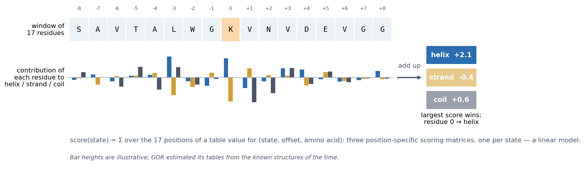
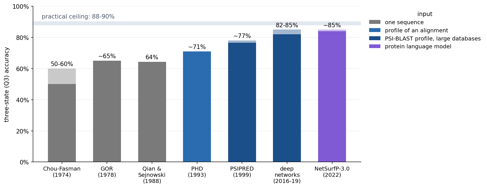
Why a single sequence is not enough. A window of neighbours is still only local information, and local sequence does not determine local structure. Kabsch & Sander (1984) searched the 62 protein structures then known and found identical five-residue stretches that were part of a helix in one protein and of a strand in another. With today’s PDB, the effect extends to stretches of ten residues. These chameleon sequences (Li et al. 2015, ChSeq database) adopt different secondary structures depending on the protein around them.
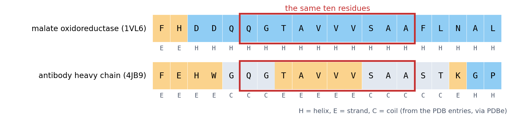
Even a better model did not overcome this. Qian & Sejnowski (1988, J Mol Biol 202:865) trained a network with a hidden layer on windows of single sequences and reached 64.3%. They concluded that “no method based solely on local information in the protein sequence is likely to produce significantly better results for non-homologous proteins”. The limit was the information in the input, not only the model.
Turning a sequence into numbers: one-hot encoding. Before a network can read a sequence, the sequence has to be turned into numbers, because a network computes weighted sums. The obvious idea, numbering the amino acids A = 1, C = 2, D = 3, …, does not work. It tells the model that C lies between A and D, and that Y (20) is twenty times “more” than A, which means nothing biologically. Instead, each residue becomes 20 numbers, all 0 except for a single 1 in the column of that amino acid:
\[ \text{A} \to (1, 0, 0, \dots, 0), \qquad \text{C} \to (0, 1, 0, \dots, 0), \qquad \dots, \qquad \text{Y} \to (0, 0, \dots, 0, 1) \]
Every amino acid is then equally different from every other, and the network learns its own weight for each amino acid at each position. A window of 13 residues becomes \(13 \times 20 = 260\) input numbers. This is how Qian & Sejnowski’s network read single sequences, and it is also the encoding of the localisation data in Session 8 (150 residues, 3000 numbers). For DNA, the same idea gives 4 numbers per base.
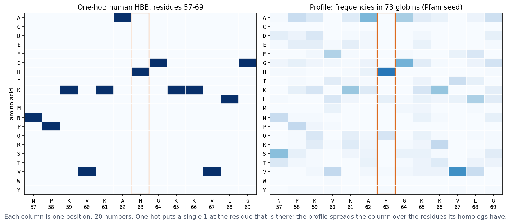
One-hot encoding is not the only choice. A residue can also be described by a few physicochemical properties (hydrophobicity, charge, size), which is compact and lets similar residues look similar. It can be described by its row of a substitution matrix such as BLOSUM62 (Session 4), or, as PHD does below, by a profile of its homologs. Later in the course, the network learns the representation itself. An embedding layer (nn.Embedding in PyTorch, used by the recurrent networks of Session 11) gives each amino acid a short vector of trainable numbers. This is exactly a linear layer applied to the one-hot vector, since multiplying a one-hot vector by a weight matrix simply picks out one row. Protein language models (Session 11) go one step further and give each residue a vector that also depends on its context in the sequence.
What changed with PHD: the use of evolutionary information. The key innovation of Rost & Sander’s PHD (1993) was its input. In their words, “a new key aspect is the use of evolutionary information in the form of multiple sequence alignments that are used as input in place of single sequences.” For each position of the window, the network sees a profile (Session 5) instead of a one-hot vector, that is, the frequencies of the 20 amino acids at that position among the protein’s homologs (the right panel of the figure above). This helps because homologs can retain similar structures even when their sequences have diverged substantially. A common expression is that structure is more conserved than sequence, and Illergård, Ardell & Elofsson (2009) quantified it: the structural cores of proteins evolve three to ten times more slowly than their sequences. Where a chameleon stretch sits in a helix, its homologs tend to vary it in the ways that helices tolerate, and where it sits in a strand, in the ways that strands tolerate. The profile can therefore show a difference that the single sequence hides. This family information alone added “six to eight percentage points”, and the full method reached 70.8% three-state accuracy. Profile-based predictors also label chameleon sequences better than single-sequence ones (Li et al. 2015).
PHD combined this input with networks at three levels:
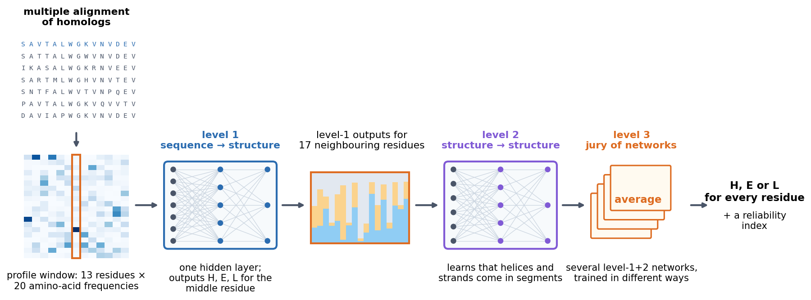
Each level is a network of the kind described in Section 7.7, only larger: weighted sums, a nonlinear activation, and more weighted sums. The lesson therefore combines both halves of this session. A better representation of the input (profiles) and a model flexible enough to use it (networks with hidden layers) together achieved what additive scores on single sequences could not. Session 9 returns to PHD once you can train such networks yourself.
After PHD: better profiles, then better models. The next big step came from the input again, not the model. PSIPRED (Jones 1999) used a network much like PHD’s, but built each profile with PSI-BLAST (Session 5) against much larger sequence databases. More and more distant homologs gave more informative profiles, and the accuracy rose to about 76-77%, as measured by cross-validation in McGuffin, Bryson & Jones (2000). Since then, larger databases and deeper networks (convolutional and recurrent networks, Sessions 10 and 11) have brought the best methods to about 82-85% (Yang et al. 2018). Methods such as NetSurfP-3.0 now replace the alignment with a protein language model (Session 11) and reach about the same accuracy much faster. The remaining gap will never close completely. Different structures of the same protein, and different programs that assign secondary structure from coordinates, disagree on some residues, mostly at the ends of helices and strands, so the practical ceiling is about 88-90%.
What a per-residue predictor has to do: HBB. To see what such a predictor must produce, take beta-globin (HBB), this course’s running example. In the crystal structure of human haemoglobin (PDB entry 2HHB), every residue of its chain has a label, either helix (H) or coil (C), and there are no strands.
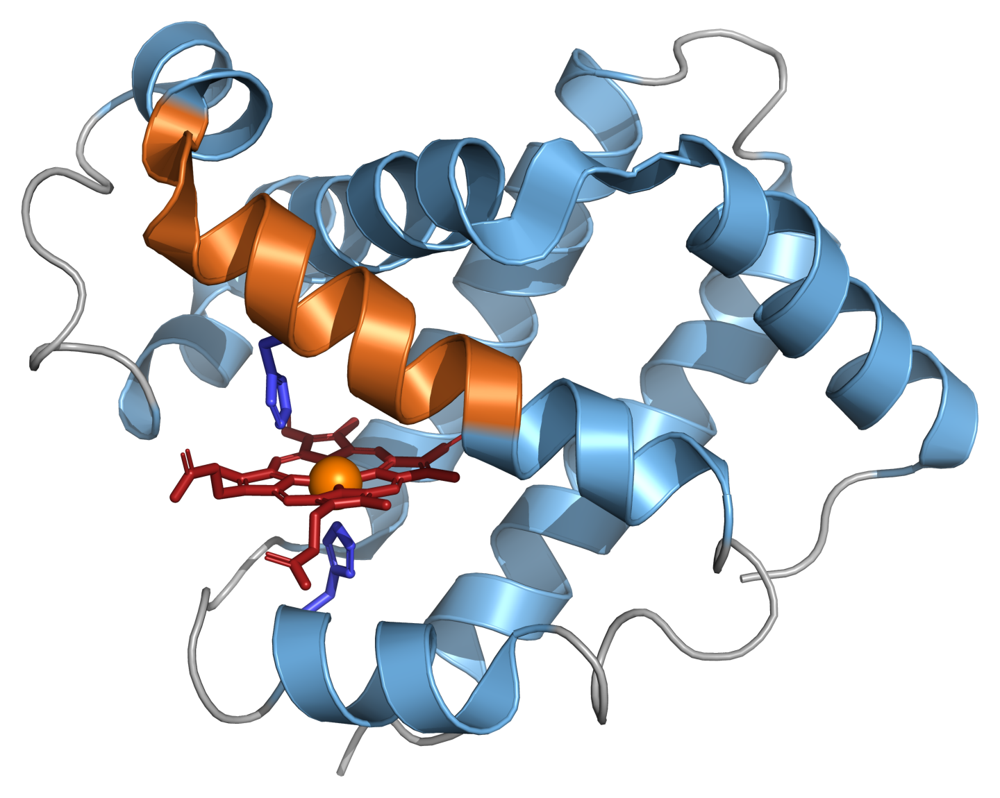
A secondary-structure predictor has to produce that whole string from the sequence. PHD-style methods label one residue at a time, from a window of its neighbours:
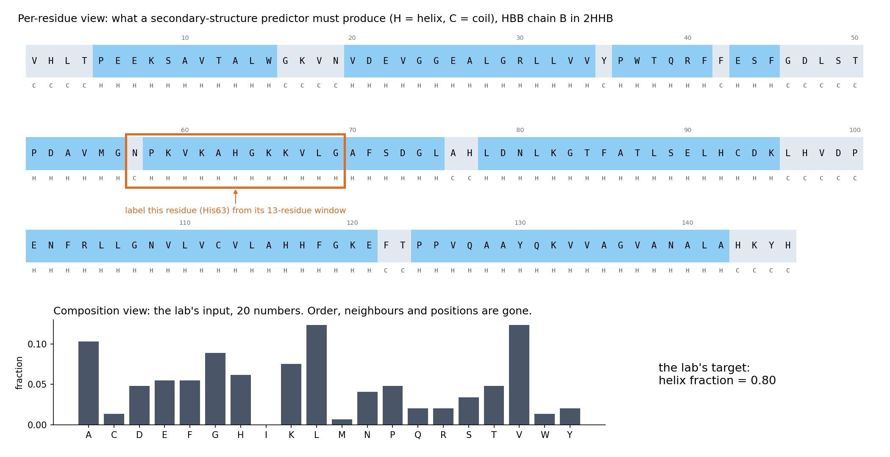
The top view keeps what matters for the label: which residues are neighbours, in what order, and where helices start and stop (five of HBB’s helices begin at a proline). A single sequence in that window gave Qian and Sejnowski their 64%, and PHD replaced each position of the window by a profile of its homologs (Session 5). The bottom view is what this session’s lab uses. HBB becomes 20 numbers, and the question becomes “what fraction is helix?” (0.80, 117 of its 146 residues). Everything in the top view that is not a count has been thrown away. Keep both views in mind for the lab.
7.8.3 Further reading
- Wikipedia, Protein secondary structure, Alpha helix, Beta sheet, and Protein structure prediction — the accuracy figures above
- Chou & Fasman (1974), “Prediction of protein conformation,” Biochemistry 13(2):222-245 — PubMed
- Garnier, Osguthorpe & Robson (1978), “Analysis of the accuracy and implications of simple methods for predicting the secondary structure of globular proteins,” Journal of Molecular Biology 120(1):97-120 — PubMed
- Rost & Sander (1993), Journal of Molecular Biology 232:584-599 — the original PHD paper
- Jones (1999), “Protein secondary structure prediction based on position-specific scoring matrices,” Journal of Molecular Biology 292(2):195-202 — PSIPRED, doi:10.1006/jmbi.1999.3091; McGuffin, Bryson & Jones (2000), “The PSIPRED protein structure prediction server,” Bioinformatics 16(4):404-405 — doi:10.1093/bioinformatics/16.4.404
- Yang, Gao, Wang, Heffernan, Hanson, Paliwal & Zhou (2018), “Sixty-five years of the long march in protein secondary structure prediction: the final stretch?” Briefings in Bioinformatics 19(3):482-494 — doi:10.1093/bib/bbw129, a review of the whole history
- Høie et al. (2022), “NetSurfP-3.0: accurate and fast prediction of protein structural features by protein language models and deep learning,” Nucleic Acids Research 50(W1):W510-W515 — doi:10.1093/nar/gkac439
- Illergård, Ardell & Elofsson (2009), “Structure is three to ten times more conserved than sequence — a study of structural response in protein cores,” Proteins 77(3):499-508 — doi:10.1002/prot.22458
- Li, Kinch, Karplus & Grishin (2015), “ChSeq: A database of chameleon sequences,” Protein Science 24(7):1075-1086 — doi:10.1002/pro.2689
- Kabsch & Sander (1984), “On the use of sequence homologies to predict protein structure: identical pentapeptides can have completely different conformations,” PNAS 81(4):1075-1078 — doi:10.1073/pnas.81.4.1075
7.9 Representation matters as much as the model
Three examples on this page make the same point, namely that the input representation limits what any model can learn:
- XOR becomes a linear problem once the input includes the feature \(x_1 x_2\).
- Secondary structure prediction plateaued with single sequences, whatever the method, and improved when the input became a profile of homologous sequences.
- This session’s lab predicts a protein’s helix fraction from its 20 amino-acid frequencies. A linear model and a neural network come out essentially tied. Before you read the lab’s explanation, it asks you what information the 20 numbers have thrown away that a per-residue prediction would need. Try to answer it yourself.
A more powerful model cannot recover information that is not in its input. What a model can learn is therefore set by how the data are represented, at least as much as by the model’s capacity. This is one of the central lessons of modern deep learning, and Sessions 10 and 11 build models (convolutional networks, language models) that learn their own representations of sequences, including order and local context.
7.10 Summary: the two pictures again
- Top: one weighted sum, then an activation. A PSSM reports the sum as a score, a perceptron thresholds it, and logistic regression passes it through a sigmoid. The weights can be learned from examples by gradient descent (Section 7.4). Whatever the weights, the model draws one straight boundary, so it can represent AND, OR and NAND, but never XOR (Sections 7.5–7.6).
- Bottom: a hidden layer of weighted sums with a nonlinear activation, then one more weighted sum. Each hidden unit draws its own boundary, and the output combines them, so XOR becomes possible (Section 7.7). Remove the nonlinear activation and the two layers collapse back into the top picture.
- Either picture can only use the information in its input (Sections 7.8–7.9).
If you can explain what changes between the two pictures, and why that change allows XOR, you have understood this session. You do not need to be able to write the PyTorch training loop from memory.
7.11 Check your understanding
The questions below give immediate feedback and cover the sections above. They are in the same style as the course’s live in-class peer-instruction quizzes, and the full question bank is in quizzes/session07.md in the repository.
7.12 The course notebook
The course notebook for this session (notebooks/session07-gradient-descent-xor.ipynb) follows the order of this page. It opens by comparing a least-squares solver with gradient descent on the same tiny dataset, and confirms that they agree. Hand-chosen weights then implement AND, OR and NAND (checked against their truth tables), and gradient descent learns AND by itself. The same model trained on XOR visibly fails. Combining the OR and NAND perceptrons with AND solves XOR exactly, and a small network with one hidden layer then learns it, with the shape of every tensor printed and a plot showing why. The same network with its activation removed fails like the linear model, and a single engineered input, \(x_1 x_2\), makes XOR linear without changing the model. The notebook closes by fetching HBB’s per-residue secondary structure live from EBI’s PDBe API and printing the two views of the protein from the figure above: the labels with a 13-residue window, and the 20 composition numbers. The version below is a static, read-only copy. Open it in Google Colab via the badge at the top of the notebook page to edit and run it yourself.
7.13 The lab
A teaser, not a full treatment. Session 8 covers train/validation/test splitting and evaluation properly, and Session 9 covers regularisation and architecture choices, so neither is anticipated here. In the lab you assemble a real dataset, the amino-acid composition of 55 real proteins, fetched live from EBI’s PDBe API, against their real alpha-helix fraction. You then fit linear regression and a small from-scratch multilayer perceptron on the same data and compare their error on held-out proteins. The two come out essentially tied on this small split, and the lab asks why a more flexible model does not help here. You first answer that question yourself (what has a composition vector thrown away?), and a scrambled-sequence demonstration then shows the answer, which links back to the windows and profiles that PHD used. (A cached copy of the dataset is used if the live fetch fails.) notebooks/session07-lab.ipynb has the real pipeline, end to end.
7.13.1 Submitting this lab
This lab is administered through Canvas, not through this book. See the course’s Canvas page for the current quiz, the deadline and how to submit.
7.14 What’s next
Session 8 moves from a single yes/no output (this session’s XOR problem) to multi-class prediction. It also asks the question that matters in practice: how do we know whether a model has learned anything useful? To answer it, Session 8 uses a real multi-class biological problem, subcellular localisation. Session 9 then trains networks properly, and shows why training sometimes fails.